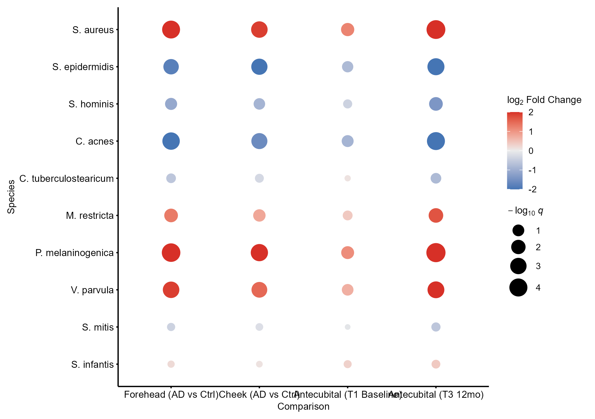
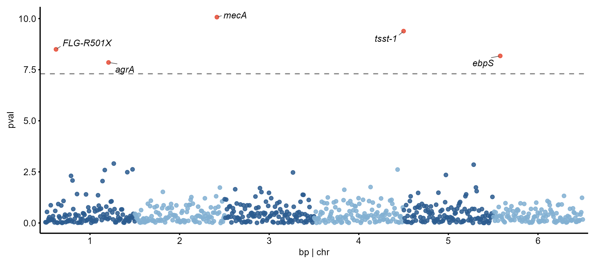
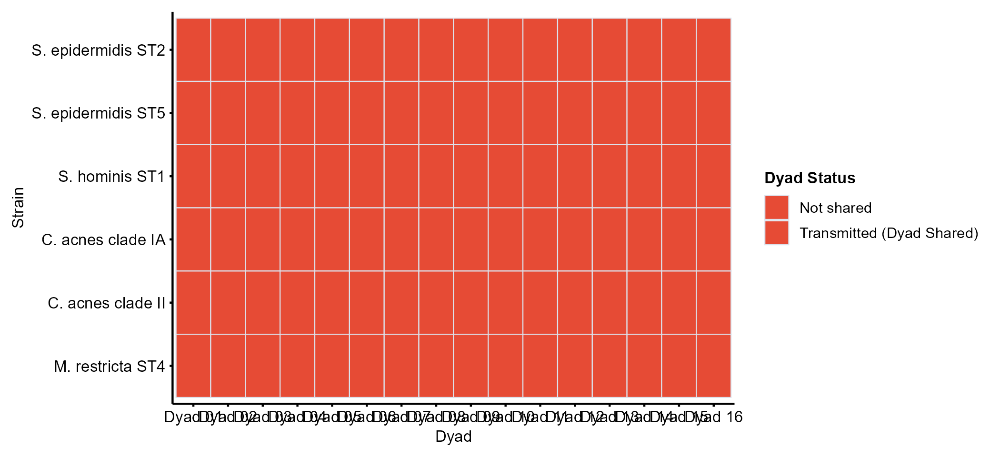

Microbial Metagenomics and mGWAS in Clinical Cohorts
Lucas VHH Tran
Source:vignettes/microbiome-mgwas.Rmd
microbiome-mgwas.RmdOverview
Clinical microbiome and microbial genome-wide association studies (mGWAS) link microbial community shifts, strain transmission, and bacterial genetic variation to patient phenotypes. This workflow adapts the clinical metagenomics archetypes from the VITALITY infant atopic dermatitis trial (Shen et al.) into standardized cliomicplot figure calls.
library(cliomicplot)
library(ggplot2)
clitheme("nature")1. Clinical Severity Stratification by Host Genetics
In cohort studies of atopic dermatitis, host genetic lesions (such as FLG loss-of-function variants) interact with microbial colonization. Here, clinical eczema severity (SCORAD index) is compared across disease subgroups with overlaid patient jitter and rank-sum tests:
cliplot(
SCORAD ~ Subgroup,
data = cohort_df,
type = "boxplot",
palette = "nature",
stat.test = "kruskal.test",
title = "SCORAD Severity by Host FLG Genotype",
ylab = "Clinical SCORAD Index"
)2. Differential Abundance Bubble Matrix
Differential abundance tests report both directional effect size (signed log2FC) and statistical significance (-log10 q). type_bubble_matrix() renders both across anatomical sampling sites and study visits:
cliplot(
Species ~ Comparison,
data = da_df,
type = type_bubble_matrix(size_col = "qval", fill_col = "log2FC", min_size = 2.0, max_size = 7.0),
title = "Metagenomic Differential Abundance Across Anatomical Sites"
)
3. Microbial GWAS (mGWAS) Manhattan Plot
Microbial GWAS maps bacterial genetic variation (single nucleotide variants and indels) to continuous clinical outcomes such as SCORAD or treatment response. type_manhattan() draws chromosome positions with significance cutoff lines and labeled gene hits:
cliplot(
qval ~ pos,
data = mgwas_df,
type = type_manhattan(
threshold = 0.01,
label_col = "gene",
point_size = 1.3,
xlab = "Staphylococcus aureus Genome Position (bp)",
ylab = expression(-log[10]~italic(q))
),
title = "Microbial GWAS: Bacterial Variants Associated with Eczema Severity"
)
4. Mother-Infant Dyad Strain Transmission Heatmap
Bacterial vertical transmission and strain persistence across early infancy are evaluated across mother-infant dyads. type_sharing_heatmap() summarizes binary dyad sharing patterns across species:
cliplot(
Taxon ~ Dyad,
data = dyad_data,
type = type_sharing_heatmap(
status_col = "Transmission",
shared_color = "#E64B35",
unshared_color = "#EDF1F7",
legend_title = "Dyad Status"
),
title = "Mother-Infant Strain Transmission at 12 Months"
)